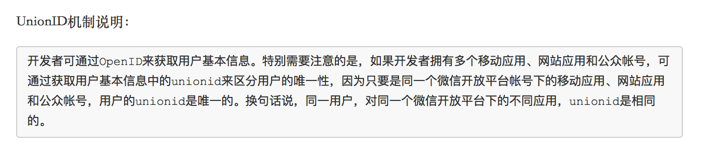

unionid
-fobjc-arc
如果你的项目没有使用ARC而某个文件需要使用ARC -fobjc-arc
你的项目使用ARC而某个文件需要使用非ARC -fno-objc-arc
点击项目导航文件--> 选中Targets--> 选择 Build Phases --> 展开Compile Sources,找到对应文件加上获取应用知识
#define BundleID [[NSBundle mainBundle] bundleIdentifier] #define BundleVersionShort [[[NSBundle mainBundle] infoDictionary] objectForKey:@"CFBundleShortVersionString"] #define BundleVersion [[[NSBundle mainBundle] infoDictionary] objectForKey:@"CFBundleVersion"] #define IDFV [[[UIDevice currentDevice] identifierForVendor]UUIDString]
iOS中开发者知识
Copyright © 2015 Powered by MWeb, Theme used GitHub CSS.